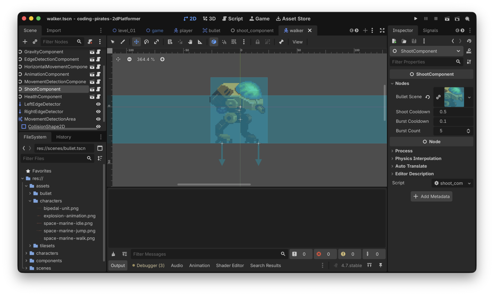

Godot 2D Platformer - level 14 fjender der skyder
Efter level 13 kan vores
Walker nu standse og vende sig i retning af os når vi
kommer tæt nok på den. Nu skal vi have den til at skyde efter os
også.
Den gode nyhed er at vi allerede har en ShootComponent,
meeeeen for at vores spil skal være bare lidt svært kunne det
være fedt hvis vores Walker skød en salve på 5 skud efter
os når den så os, så vi skal have udvidet vores
ShootComponent med en ny funktion.
Lad os gå i gang, du ved hvad første spørgsmål er...
Hvad er det vi gerne vil?
Vi har allerede håndteret at Walkeren "får øje på os" og
vender sig om efter os.
Vi kender også "retningen" fra Walker til
Player, den regnede vi ud sidste gang som en normaliseret
Vector2.
Så nu vil vi gerne i vores walker.gd script - når
Walker får øje på Player og
player_detected derfor er true kalde en ny
funktion på vores ShootComponent, lad os kalde funktionen
handle_burst_shoot_requested.
Den funktion minder meget om vores allerede eksisterende
handle_shoot_requested funktion på
ShootComponent så lad os lige kigge på den funktion:
func handle_shoot_requested(pos: Vector2, dir: Vector2, offset: Vector2) -> void:
# må vi overhovedet skyde?
if not can_shoot:
# næh...nå men så stopper vi da bare her!
return
# lav en ny bullet
var bullet = bullet_scene.instantiate()
# og sæt den op med de rigtige værdier
bullet.add(pos, dir, offset)
# og smid den i view hierakiet
get_tree().root.add_child(bullet)
# sørg for at vi ikke kan skyde med det samme
can_shoot = false
# vent!
await get_tree().create_timer(shoot_cooldown_period).timeout
# og sig at nu kan vi skyde igen
can_shoot = trueForskellen er bare at vi gerne vil kalde det her:
# lav en ny bullet
var bullet = bullet_scene.instantiate()
# og sæt den op med de rigtige værdier
bullet.add(pos, dir, offset)
# og smid den i view hierakiet
get_tree().root.add_child(bullet)fem gange efter hinanden med et lille mellemrum mellem hvert skud. Hvordan kan vi gøre det?
Du har sikkert regnet det ud, vi kan bruge endnu en timer
ligesom vi gjorde i vores handle_shoot_requested, så vi
skal bruge et tidsinterval som vi venter, lad os kalde det
burst_cooldown_period og lad os give det et kort interval,
f.eks 0.1 sekund.
Så kan vi lave en "tæller" variabel, lad os kalde den
shot_index og så lave en løkke som vi kører igennem 5 gange
(fordi vi gerne vil skyde 5 skud), hvor vi siger noget i retning af:
for shot_index in 5:
# lav ny bullet som vi gjorde ovenfor
# start timeren
burst_cooldown_timer.start()
# vent på at den bliver færdig
await get_tree().create_timer(burst_cooldown_period).timeout
# og så starter vi loopet forfra igenMen hov!
Du tænker sikkert allerede nu
OK nu laver vi det samme "lav en ny bullet" kode to steder, både i
handle_shoot_requestedog ihandle_burst_shoot_requested, det er da fjollet!
Og du har jo ret! Så den logik kan vi trække ud i en separat funktion som vi kan kalde begge steder fra.
Nu har vi vist alle brikkerne klar så vi kan lave en liste:
Lad os gå i gang
Træk "opret skud" logik ud i separat funktion
Den er nem!
Lad os lave en ny intern funktion i vores
ShootComponent
- Funktionen skal hedde
_spawn_bullet - Den skal tage de samme tre parametre som
handle_shoot_requestedallerede tager - Den skal ikke returnere noget
- Vi skal flytte logikken til at oprette og sætte en ny
Bullet - Vi skal kalde den nye
_spawn_bulletfunktion fra vores eksisterendehandle_shoot_requested
Prøv at se om du selv kan...det kan du godt!
Her er vores bud:
class_name ShootComponent
extends Node
@export_subgroup("Nodes")
@export var bullet_scene: PackedScene
@export var shoot_cooldown_period: float = 0.5
var can_shoot: bool = true
func handle_shoot_requested(pos: Vector2, dir: Vector2, offset: Vector2) -> void:
# må vi overhovedet skyde?
if not can_shoot:
# næh...nå men så stopper vi da bare her!
return
_spawn_bullet(pos, dir, offset)
# sørg for at vi ikke kan skyde med det samme
can_shoot = false
# vent!
await get_tree().create_timer(shoot_cooldown_period).timeout
# og sig at nu kan vi skyde igen
can_shoot = true
func _spawn_bullet(pos: Vector2, dir: Vector2, offset: Vector2) -> void:
# lav en ny bullet
var bullet = bullet_scene.instantiate()
# og sæt den op med de rigtige værdier
bullet.add(pos, dir, offset)
# og smid den i view hierakiet
get_tree().root.add_child(bullet) Kør dit spil, bare for at være sikker på at vi stadig kan skyde.
Det var step et
Lav ny
handle_burst_shoot_requested funktion
Så skal vi have lavet vores nye funktion.
Vi nåede ovenfor frem til at vi skal bruge:
- En ny
burst_cooldown_periodvariabel af typenfloatså vi kan styre intervallet mellem hvert skud i en salve - En ny
burst_countvariabel af typenintså vi kan styre hvor mange skud der er i en salve
Og så selve funktionen som vi definerede ovenfor.
Igen...prøv selv, du kan godt :)
Her er vores færdige shoot_component.gd script:
class_name ShootComponent
extends Node
@export_subgroup("Nodes")
@export var bullet_scene: PackedScene
@export var shoot_cooldown_period: float = 0.5
# Variabler til at skyde en salve
@export var burst_cooldown_period: float = 0.1
@export var burst_count: int = 5
var can_shoot: bool = true
func handle_shoot_requested(pos: Vector2, dir: Vector2, offset: Vector2) -> void:
# må vi overhovedet skyde?
if not can_shoot:
# næh...nå men så stopper vi da bare her!
return
_spawn_bullet(pos, dir, offset)
# sørg for at vi ikke kan skyde med det samme
can_shoot = false
# vent!
await get_tree().create_timer(shoot_cooldown_period).timeout
# og sig at nu kan vi skyde igen
can_shoot = true
func handle_burst_shoot_requested(pos: Vector2, dir: Vector2, offset: Vector2) -> void:
# Igen...må vi overhovedet skyde?
if not can_shoot:
# næh...nå men så stopper vi da bare her!
return
# sørg for at vi ikke kan skyde med det samme
can_shoot = false
# Skyd en salve
for shot_index in burst_count:
_spawn_bullet(pos, dir, offset)
await get_tree().create_timer(burst_cooldown_period).timeout
# vent!
await get_tree().create_timer(shoot_cooldown_period).timeout
# og sig at nu kan vi skyde igen
can_shoot = true
func _spawn_bullet(pos: Vector2, dir: Vector2, offset: Vector2) -> void:
# lav en ny bullet
var bullet = bullet_scene.instantiate()
# og sæt den op med de rigtige værdier
bullet.add(pos, dir, offset)
# og smid den i view hierakiet
get_tree().root.add_child(bullet) Det var step to
Tid til at binde det hele sammen!
Kald
handle_burst_shoot_requested fra walker.gd
script
Første skridt er at vi lige skal have tilføjet en
ShootComponent til vores Walker som vi gjorde
for vores Player i level 9.
- Husk at tilføj
@export var shoot_component: ShootComponenttilwalker.tscn - Husk at tilføj vores
bullet.tscnsom "Bullet Scene" i "Inspectoren" til højre som vi har gjort her nedenfor

Og så kan vi rette i vores script så vi kan skyde i
_physics_process:
func _physics_process(delta: float) -> void:
gravity_component.handle_gravity(self, delta)
handle_player_detection()
if not player_detected:
current_movement_direction = edge_detection_component.handle_edge_detection(current_movement_direction)
else:
# Der er en player i nærheden...skyd!
# først finder vi ud af retningen mellem walker og player
var new_direction = movement_detection_component.direction_to_target(self)
# og så skyder vi!
shoot_component.handle_burst_shoot_requested(global_position, new_direction, Vector2(32, 0))
horizontal_movement_component.handle_horizontal_movement(self, current_movement_direction)
# Husk den her!
move_and_slide()Læg mærke til at vi lige laver lidt luft mellem Walker
og Bullet med den her parameter:
Vector2(32, 0)
Prøv og kør dit spil.
Hmmm! Når vores Walker opdager os skyder den...men den
skyder sig selv...hvorfor det mon? Kan du regne det ud?
Tid til at genbesøge
bullet.gd
Vi var lidt for effektive da vi lavede vores
_on_body_entered i bullet.gd. Her er den:
func _on_body_entered(body: Node2D) -> void:
if body is CharacterBody2D:
body.hit(damage)
queue_free()Når vores Walker skyder, rammer den sin egen collision
shape med det samme, hvilket gør at vi ryger ind i
_on_body_entered og eftersom Walker er en
CharacterBody2D jamen så giver vi os selv skade.
Det er jo dumt!
Vi kan løse det på flere måder:
- Vi kan bare øge afstanden mellem
WalkerogBulletnår vi kalderhandle_burst_shoot_requested - Vi kan sende et gruppenavn med ind til vores
Bulletsådan at vi lige checker hvad det er vi gerne vil ramme. Altså sådan at når enPlayerskyder siger vi at den skal ramme noget der er i gruppen "Enemies" og omvendt, når det er enWalkerder skyder, siger vi at den skal ramme noget der er i gruppen "Player.
Option 1 virker som den nemme og hurtige løsning men...hvis vi laver
den vil det stadig være sådan at en Walker kan
ramme og dræbe en anden Walker, det vil vi vel ikke.
Så vi går efter option 2 og det betyder at vi skal:
Nemt! Lad os gå i gang
Udvide add
funktionen i bullet.gd
Vi skal sende en parameter med i add funktionen som vi
kan gemme til senere på vores Bullet.
Lad os kalde den group_to_hit af typen
String i første omgang og lad os starte med at definere en
variabel på vores bullet.gd så vi kan gemme den
var group_to_hit: String
Og så skal vi have den med som parameter på add og gemme
den:
func add(pos: Vector2, dir: Vector2, offset: Vector2, target_group: String) -> void:
# gem group_to_hit så vi kan checke det senere
group_to_hit = target_group
# regn x og y ud for vores bullet
mere kode herunder som ikke er ændretDet var step 1
Videre
Udvide
_on_body_entered funktionen
Nu har vi en group_to_hit som vi kan checke op imod,
sådan her:
func _on_body_entered(body: Node2D) -> void:
if body is TileMapLayer:
queue_free()
if body is CharacterBody2D and body.is_in_group(group_to_hit):
body.hit(damage)
queue_free()Bemærk at vi kun vil kalde queue_free hvis det er den
rigtige gruppe...derfor bliver vi også nødt til at checke på
TileMapLayer igen desværre.
Det var step 2
Videre til step 3
Udvid vores
ShootComponent
Nu kræver vores Bullets add funktion en
target_group parameter så den skal vi også lige kunne sende
med ind i vores ShootComponent så den kan sende
det videre når der skal skydes.
Så vores handle_shoot_requested og
handle_burst_shoot_requested skal have tilføjet en
target_group parameter som så sendes med ned i
_spawn_bullet.
Prøv selv, Godot skal nok fortælle dig hvad du mangler :)
Her er vores opdaterede ShootComponent:
class_name ShootComponent
extends Node
@export_subgroup("Nodes")
@export var bullet_scene: PackedScene
@export var shoot_cooldown_period: float = 0.5
# Variabler til at skyde en salve
@export var burst_cooldown_period: float = 0.1
@export var burst_count: int = 5
var can_shoot: bool = true
func handle_shoot_requested(pos: Vector2, dir: Vector2, offset: Vector2, target_group: String) -> void:
# må vi overhovedet skyde?
if not can_shoot:
# næh...nå men så stopper vi da bare her!
return
_spawn_bullet(pos, dir, offset, target_group)
# sørg for at vi ikke kan skyde med det samme
can_shoot = false
# vent!
await get_tree().create_timer(shoot_cooldown_period).timeout
# og sig at nu kan vi skyde igen
can_shoot = true
func handle_burst_shoot_requested(pos: Vector2, dir: Vector2, offset: Vector2, target_group: String) -> void:
# Igen...må vi overhovedet skyde?
if not can_shoot:
# næh...nå men så stopper vi da bare her!
return
# sørg for at vi ikke kan skyde med det samme
can_shoot = false
# Skyd en salve
for shot_index in burst_count:
_spawn_bullet(pos, dir, offset, target_group)
await get_tree().create_timer(burst_cooldown_period).timeout
# vent!
await get_tree().create_timer(shoot_cooldown_period).timeout
# og sig at nu kan vi skyde igen
can_shoot = true
func _spawn_bullet(pos: Vector2, dir: Vector2, offset: Vector2, target_group: String) -> void:
# lav en ny bullet
var bullet = bullet_scene.instantiate()
# og sæt den op med de rigtige værdier
bullet.add(pos, dir, offset, target_group)
# og smid den i view hierakiet
get_tree().root.add_child(bullet) Det var step 3...videre
Ret Player og
Walker
Vi skal to ting her:
- Fortælle hvilken gruppe vi er i
- Fortælle hvad vi vil ramme
Begge dele kan vi gøre direkte i scripts.
Hvilken gruppe er vi i?
I både player.gd og walker.gd kan du
tilføje add_to_group i _ready (du skal lige
lave funktionen i player.gd)
Det ser sådan her ud for player.gd
add_to_group("Player")
Og sådan her for walker.gd
add_to_group("Enemy")
Hvad vil vi ramme?
Vi har jo udvidet vores ShootComponent til nu at tage en
target_group med så det skal vi lige huske at gøre når vi
kalder shoot_component.
Her er vores opdatede player.gd script:
extends CharacterBody2D
@export_subgroup("Nodes")
@export var animation_component: AnimationComponent
@export var gravity_component: GravityComponent
@export var horizontal_movement_component: HorizontalMovementComponent
@export var input_component: InputComponent
@export var jump_component: JumpComponent
@export var shoot_component: ShootComponent
func _ready() -> void:
add_to_group("Player")
func _physics_process(delta: float) -> void:
gravity_component.handle_gravity(self, delta)
horizontal_movement_component.handle_horizontal_movement(self, input_component.horizontal_direction)
jump_component.handle_jump(self, input_component.jump_was_pressed())
move_and_slide()
func _process(delta: float) -> void:
animation_component.handle_move_animation(input_component.horizontal_direction)
animation_component.handle_jump_animation(gravity_component.is_jumping, gravity_component.is_falling)
if input_component.shoot_was_pressed():
var direction = Vector2.LEFT if animation_component.get_sprite_direction() == -1 else Vector2.RIGHT
shoot_component.handle_shoot_requested(position, direction, Vector2(16, 0), "Enemy")Og så kan du selv regne ud hvad der skal ske i walker.gd
:)
Hold nu op alt det vi kan strege nu!
Oooog
Sandhedens time!
Kør dit spil og se at Walkeren skyder.
Hov!! Det crasher jo!
Invalid call. Nonexistent function 'hit' in base 'CharacterBody2D (player.gd)'.
Ah ja, vi skrev jo i level 11:
Så, til at starte med "leger vi" at der findes en funktion kaldet hit på alle CharacterBody2Ds som vores Bullet rammer.
Men den har vi jo ikke lavet på vores Player endnu.
Lad os bare lave en simpel implementation nu i
player.gd
func hit(damage: int) -> void:
print("Av! ", damage)Og lad os så køre vores spil igen.
Perfekt, nu bliver vi ramt og kan se
Av! 1
I "Output".
Tada
Det var endnu en stor omgang...mest fordi vi måtte rette i eksisterende kode for at få det til at virke i alle scenarier, sådan er det tit og ofte når man programmerer.
Så nu kan fjenderne skyde på os men...vi tager stadig ikke skade, lad os få rettet op på det næste gang, på gensyn.